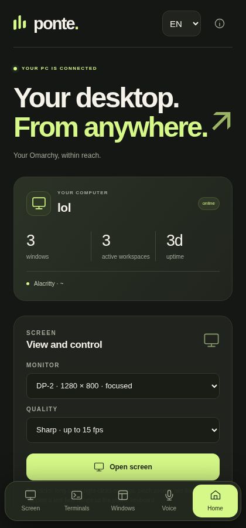
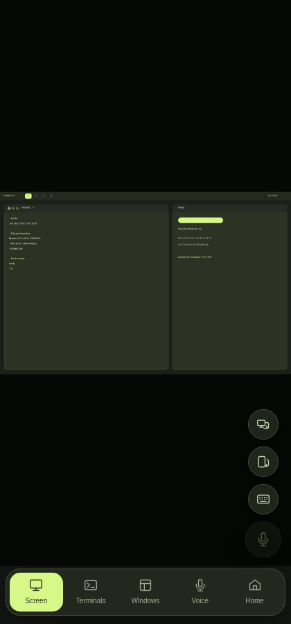
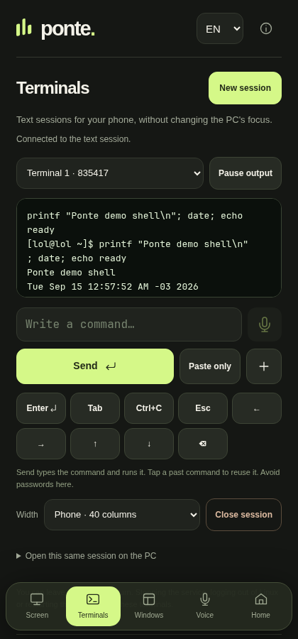
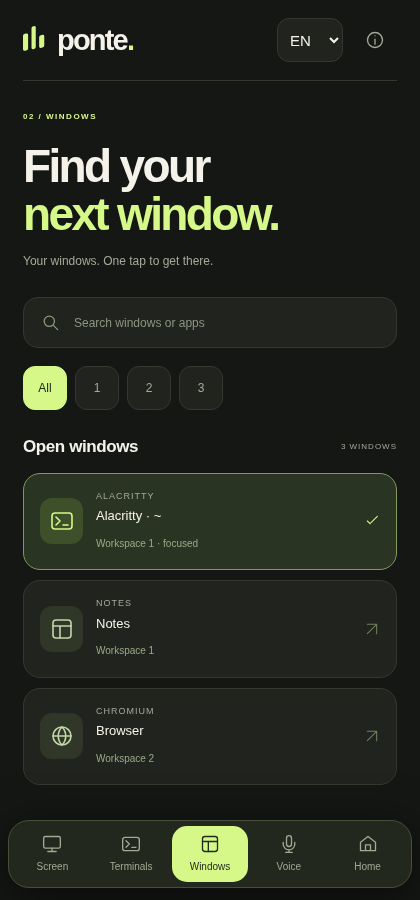
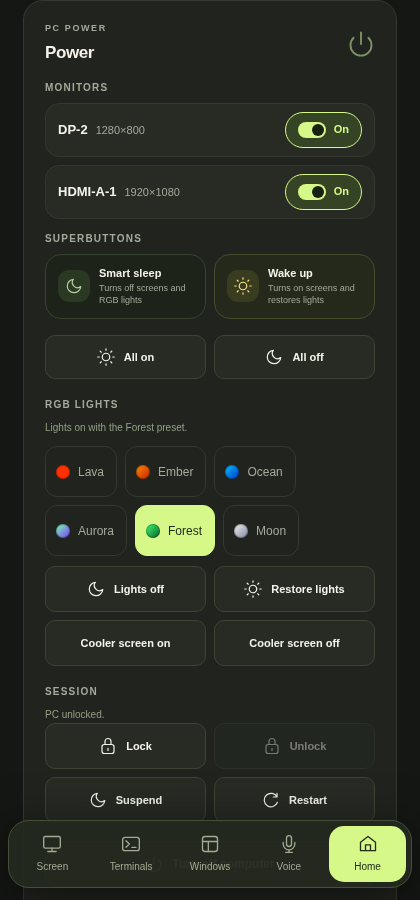
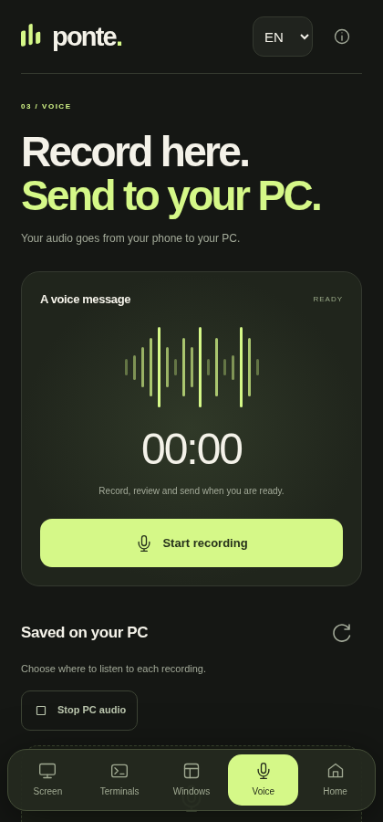

Open source alpha · Omarchy · Tailscale
Touch controls and live monitor views on an Android phone, over your own tailnet. Independent experimental alpha.
Narration: Lucas Oliveira, official OmniVoice profile. The app on screen is a bench-local demo with its own synthetic desktop, not the author's live session.
The phone talks to your PC over Tailscale TLS. A device on the same account pairs without a password. Ponte has no analytics SDK.
Tap clicks. Long-press right-clicks or drags. Pinch zooms. Two fingers scroll. Tap a text field and the Android keyboard types on the PC.
Workspaces, RGB lights, lock, suspend, terminals that do not steal the PC's focus. Built for this desktop, not a generic remote-desktop clone.
A Node server on your Omarchy PC. An Android shell that pins your certificate. HTTP stays on loopback.
Setup writes a local config and certificate. The APK pins that leaf. Somebody else's APK will not talk to your machine.
Open the app. If the phone is on your tailnet, it connects on its own. No pairing key to type.
Screen is the first page. The stream is authenticated MJPEG. It stops when you leave.
A paired phone is physical access. Tailscale membership stays your job. Read the security model before you add a second device.
Captures from a bench-local demo on 15 September 2026. The streamed desktop is a synthetic Omarchy scene, isolated from the author's Hyprland session. Physical Redmi shots from 5 September 2026 stay in the evidence notes.
Hostname, windows, workspaces, the focused app. Pick a monitor and a quality profile, then open the screen. English is the default; Portuguese sticks once you choose it.

The monitor fills the phone. Sharp streams native pixels at up to 15 fps. There is no system audio. This is for control and checking progress, not gaming.

Private tmux sessions for the phone. Send runs the command. Speak drops a transcript into the composer. The PC's focused window stays put.

Browse workspaces and open windows, then focus the one you want. The list is the live Hyprland client list of the demo instance.

Per-monitor DPMS, smart sleep, RGB presets through Magma, lock, suspend, restart. Unlock types the password on the PC only while the Omarchy lock is up. It is never stored on the phone.

Record on the phone, review, send. Files live on your PC. Dictation uses Sussurro when it is running, or any OpenAI-compatible endpoint. Audio is transcribed and discarded. Android recording on a physical device is still pending retest.

Short local samples and changelog facts. Cellular and geographically remote Tailscale were not measured.
Sources: docs/evidence.md (5 Sep 2026) and CHANGELOG 0.1.0-alpha.5 / alpha.13. The fps sample is a PC-side capture, not an Android frame-rate or battery test.
Different jobs. Ponte is a phone remote for one Omarchy PC. RustDesk is a general remote desktop. Sunshine + Moonlight is game streaming with audio.
| Ponte | RustDesk + Tailscale | Sunshine + Moonlight | |
|---|---|---|---|
| What it is for | Android control of an Omarchy desktop | Generic remote desktop, any OS | Low-latency game and desktop streaming |
| Network | Your Tailscale account. Auto-pair on the same user | Works over Tailscale without a public relay | Your LAN or whatever you put in front of it |
| Live picture | MJPEG, up to 15 fps, no system audio | Desktop protocol, typically with audio | Hardware encode, high fps, with audio |
| Omarchy extras | Lights, lock, terminals, workspaces | No | No |
| First install | Personal APK build, still one-shot | Install the client, connect by IP or ID | Host + Moonlight client, PIN pair |
| License | MIT | GPL-3.0 | GPL-3.0 |
| Vendor account | None | None if you stay on your tailnet | None |
Dated 15 Sep 2026. Ponte facts: this repo's changelog and evidence notes. RustDesk over Tailscale: Tailscale docs, last validated 15 Dec 2025. Sunshine capture and audio: GamingOnLinux, 18 May 2026. If a row went stale, open an issue.
Omarchy/Hyprland, Node 22+, Python 3.12+, OpenSSL 3, Tailscale on both devices. You need hyprctl, ydotool, wtype, grim, wpctl, ffmpeg, tmux.
# from a graphical session, not a headless SSH git clone https://github.com/LucasOl1337/ponte.git cd ponte ./ponte setup ./ponte install ./android/build.sh # then install .work/Ponte.apk on your phone, privately
The APK contains your server address and public certificate. Do not redistribute it. Full paths, TLS renewal and troubleshooting: setup guide. Tested scope: evidence.